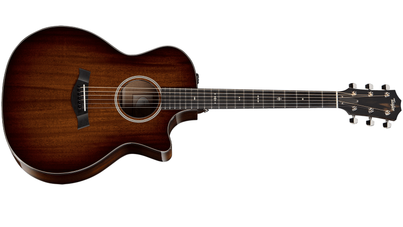
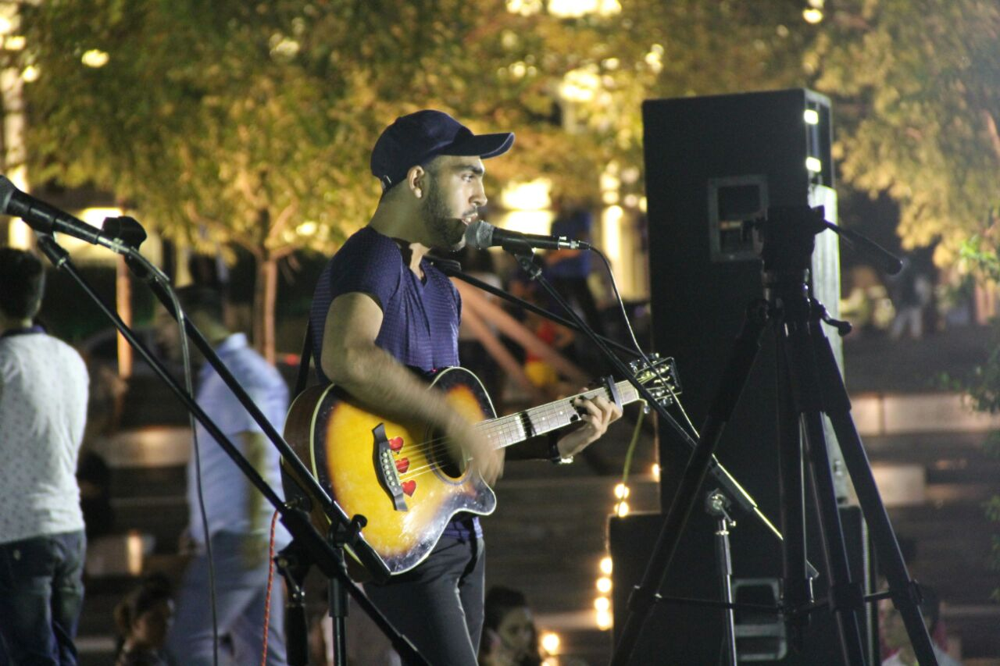
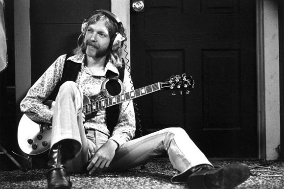

Akorlar
Güzel Şarkıların Güzel akorları
Sarkicilar
Sezen aksu
Halil Sezai
Haberler

Samir hocanın öyrencisi ve henüz ünlü olmayan Turan Hüseynov Baküde hem de şapka ile açık sahneye çıktı..
:)

Dünyaca ünlü müzik dergisi Rolling Stone, efsanevi müzisyen Jimi Hendrix'i tüm zamanların en iyi gitaristi seçti.